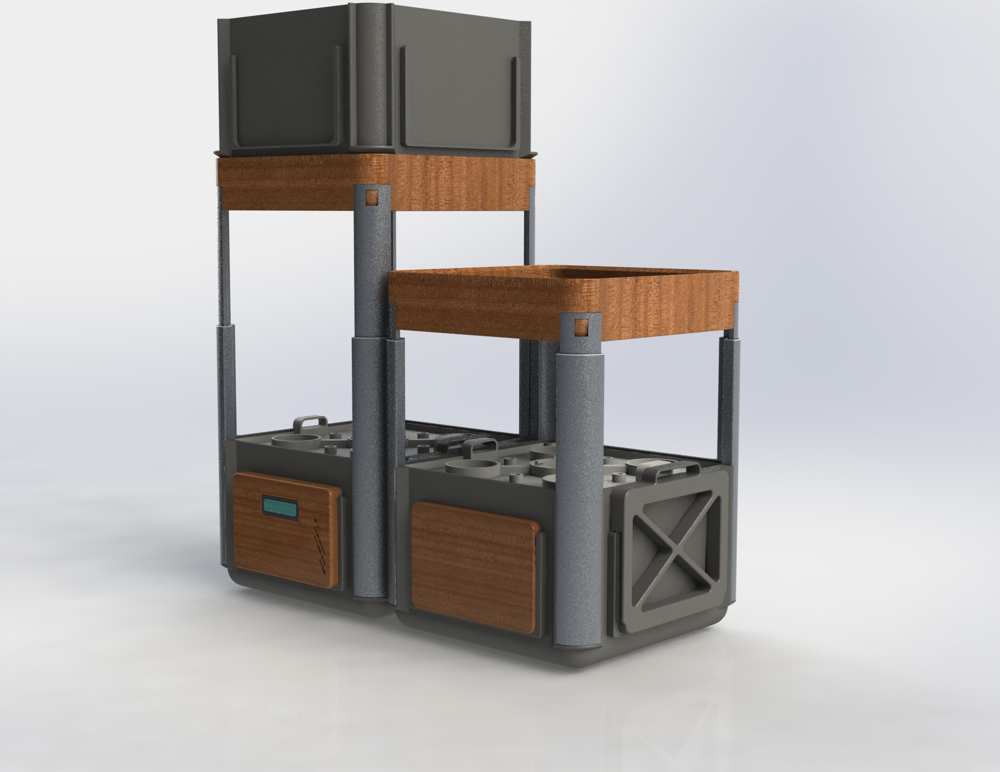

Le projet de serre hydroponique connecté
Nous avons dû remettre 6 livrables dans un délai de plus ou moins 4 mois. En 4 mois, nous avons fait:
Une soumission initiale, qui vise à donner un avant-goût aux juges quant aux problématiques choisies par
chacune des équipes.
Un guide d’exploration, qui permet de planifier le test de marché.
Une étude de marché & Document de design, qui permet de démontrer qu’il y a un besoin dans le marché et
un intérêt de clients.
Un plan d’affaires, qui vise à définir notre plan d’affaire, notre projections financières, nos risques
commerciaux, notre stratégie
de mise en marché, notre plan de croissance (RH, R&D, partenariats) et regroupé l’information dans notre
Business Model Canvas.
Un prototype, qui démontre explicitement l’innovation technologique.
ne présentation, devant les juges de notre problématique, notre produit, notre marché et certains
éléments prédominant de notre plan d’affaires.

Suite aux jeux de génie nous avons finis à 1 points sur 340 d’une place sur le podium et à seulement 16
points de la première place.
Étant un projet que nous croyons beaucoup en sont potentiel. Nous avons quand même décidé de continuer le
projet, notamment pour notre
projet de fin d’étude, qui est présentement en cours. Dans notre projet de fin d’étude, nous désirons
finaliser la conception du produit
au niveau mécanique pour avoir un produit commercialisable par la suite.
Comme nous avons une limite de 4 mois pour notre PFE, nous avons dû évaluer la capacité de l’équipe.
Au niveau TI et électrique nous désirons concevoir et implémenter la base de notre système informatique
(embarqué et cloud) pour permettre le développement futur du produit pour des capacité de système IOT.